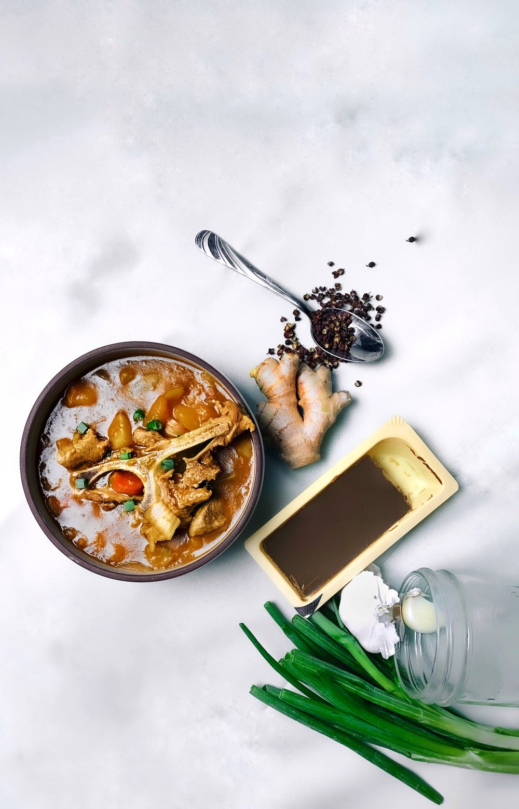

Fall Japanese Curry
October 12, 2019
It’s finally fall break! With classes and most of my responsibilities on a halt, this break has been nothing short of relaxation aka cooking & baking all the things I know have time to cook & bake.
Recently, I asked everyone what they wanted to see more of on Brad & Butter and one of the responses was more lifestyle content as well as my everyday eats & drinks. I loved the idea of sharing recipes that might be more accessible to everyone in terms of ingredients, complexity, and seasonality. Thus, this fall-inspired curry was born.
Growing up, my grandmother used to make this delicious curry soup that I would indulge in week after week. The secret ingredient to her recipe was the one and only japanese golden curry roux cubes. You can find these pre-made curry roux blocks in any asian grocery and they are packed with flavor. Of course, you can make your own with just butter, flour, curry powder, garam masala, and cayenne, but as a student I often don’t have the time to start from scratch. If you’re in a pinch for time, the pre-made stuff is more than magical.
Japanese curry tends to be slightly sweeter than traditional southeast asian curries, which is why I have a soft spot for the variety. And if you haven’t noticed already, I’m a bit of a health geek — hence the butternut squash in place of potatoes in this dish. Sure, potatoes are awesome, but the butternut squash adds a natural sweetness along with the pears and honey that really complement the mild spice of the curry. I chose pork shoulder as the protein for my curry because pork is probably my favorite cut of meat. It’s relatively inexpensive, packed with flavor, and super easy to cook with. Feel free to substitute with any other cut of meat, but pork is prince. I would also highly suggest throwing some bones in the curry as it simmers so you can max out on depth of flavor, because nobody can say no to rich bone broth.
Happy cooking and let me know what you think in the comments below!
Recipe
Ingredients (serves 5-6)
- 1.5 lb bone-in pork shoulder (cut into chunks)
- 2 cloves garlic (minced)
- 1 tbsp. fresh ginger (minced)
- 1 onion (cut into chunks)
- 2 carrots (cut into chunks)
- 1 butternut squash (cubed)
- 1 bartlett pear (cubed)
- 110g golden curry medium hot curry roux
- 1 litre beef stock
- 2 tsp. szechuan peppercorns
- 1 tbsp. honey
- 1/4 cup soy milk
- salt (to taste)
How to make
- Heat 1 tbsp. of oil in a large saucepot over medium-high heat. Brown the cubed pork shoulder pieces for approxiamtely 5 minutes on each side, including the bone if using.Remove from the saucepot, reserving any fat and liquid that rendered out from the pork.
- Add the minced garlic and ginger to the sauce pot and season with a pinch of salt. Cook until slightly softened and fragrant. Add the butternut squash, onion, carrot, and another pinch of salt. Cook for approxaimtely 5-7 minutes or until vegetables are slightly softened.
- Place all the browned pork, including the bone if using back into the saucepot along with the beef stock and szechuan peppercorns. Bring to a simmer and add the curry roux and cubed pears, and honey. Reduce the heat to low and simmer for 35-45 minutes uncovered or until desired consistency is reached.
- Stir in soy milk until fully incorporated and season with salt to taste. Serve with steamed rice, japanese pickled ginger, and chopped scallions if desired.
- Enjoy!
Meet the brad behind the butter...

Hello and welcome to you new home! I'm Bradley, a junior Hotelie, a self-taught baker, bartender, and a flatlay freak. Here on Brad & Butter, I bake, shake, style, and snap tot tell inspiring stories. This blog is a manifestation of all the things in life at have inspired me to act upon something. And in turn, I hope that whatever I wrtie, bake, or shake can inspire other people. Click here to learn about me...
Read Moreeat pretty
drink pretty
sing pretty
live pretty
you are pretty
recent posts


leave a reply